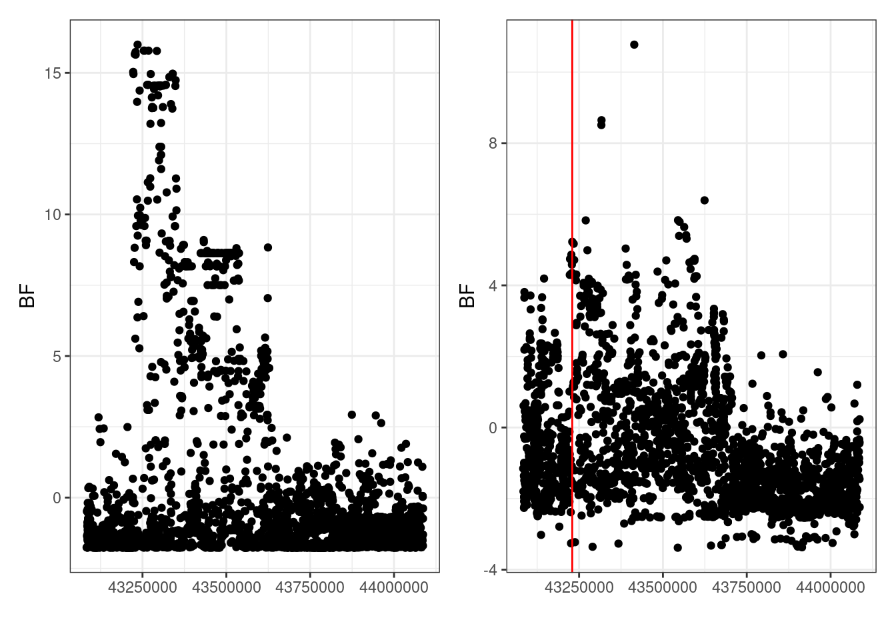

library(readr)
library(janitor)
library(dplyr)
library(patchwork)
library(tidyr)Method testing
hg38_data <- readRDS("/home/jp2045/coloc-estimated-eqtl-priors/data/tss-data/hg38-tss-data.rds")plot_bfs <- function(bfs, snps, tss = NULL, with_prior = FALSE) {
# Only take the first susie signal.
bfs <- bfs[1, snps]
# Assume SNPS are in chr:bp format.
bps <- vapply(strsplit(snps, ":"), \(x) as.numeric(x[[2]]), numeric(1))
if (!is.null(tss) & with_prior) {
prior_vec <- 10^-4 * length(bps) * coloc:::calculate_non_uniform_p(bps, tss)
bfs <- bfs + log(prior_vec)
}
p <- tibble(bf = bfs, bp = bps) |>
ggplot(aes(bp, bf)) +
geom_point()
if (!is.null(tss)) {
p <- p + geom_vline(xintercept = tss, colour = "red")
}
p +
labs(x = "", y = "BF") +
theme_bw()
}
lookup_tss <- function(trait) {
gene_id <- unlist(strsplit(trait, ".", fixed = TRUE))[[2]]
hg38_data |>
filter(ensembl_gene_id == gene_id) |>
pull(tss)
}load("/rds/project/cew54/rds-cew54-basis/People/CHRIS/colocs_for_jeffrey.RData")
devtools::load_all("~/coloc")
# 27 rows have 'too small overlap' warnings.
method_comparison_data <- COLOC |>
# The BLUEPRINT Bayes factors are empty.
filter(!(substr(trait1, 1, 9) == "BLUEPRINT" | substr(trait2, 1, 9) == "BLUEPRINT")) |>
as_tibble() |>
mutate(
gene1 = grepl("ENSG", trait1, fixed = TRUE),
gene2 = grepl("ENSG", trait2, fixed = TRUE)
) |>
filter(gene1 | gene2) |>
rowwise() |>
# Assume that only 1 trait is an expression trait.
mutate(tss = ifelse(gene1, lookup_tss(trait1), lookup_tss(trait2))) |>
select(trait1, trait2, block, tss, gene1) |>
mutate(coloc_unif = list(coloc.bf_bf(BF[[block]][[trait1]], BF[[block]][[trait2]]))) |>
mutate(coloc_non_unif = ifelse(
gene1,
list(coloc.bf_bf(BF[[block]][[trait1]], BF[[block]][[trait2]], tss1 = tss)),
list(coloc.bf_bf(BF[[block]][[trait1]], BF[[block]][[trait2]], tss2 = tss))
)) |>
rowwise() |>
mutate(h4_unif = list(coloc_unif$summary$PP.H4.abf)) |>
mutate(h4_non_unif = list(coloc_non_unif$summary$PP.H4.abf)) |>
filter(!any(is.na(h4_unif))) |>
filter(!any(is.na(h4_non_unif)))method_comparison_data |>
mutate(
h4_non_unif = max(h4_non_unif),
h4_unif = max(h4_unif)
) |>
ggplot(aes(h4_unif, h4_non_unif)) +
geom_point() +
geom_segment(aes(xend = h4_unif, yend = h4_unif), color = "grey") +
geom_abline(col = "grey") +
labs(
x = "H4: Uniform priors",
y = "H4: Non-uniform priors"
) +
theme_bw()
method_comparison_data |>
mutate(
h4_non_unif = max(h4_non_unif),
h4_unif = max(h4_unif)
) |>
filter(h4_unif <= 0.6 & h4_non_unif > 0.6)# A tibble: 2 × 9
# Rowwise:
trait1 trait2 block tss gene1 coloc_unif coloc_non_unif h4_unif
<chr> <chr> <chr> <dbl> <lgl> <list> <list> <dbl>
1 ASTCO_Ferreira_… Schmi… chr2… 1.98e8 FALSE <named list> <named list> 0.513
2 Bossini-Castill… VIT_J… chr4… 1.01e8 TRUE <named list> <named list> 0.590
# ℹ 1 more variable: h4_non_unif <dbl>method_comparison_data |>
mutate(
h4_non_unif = max(h4_non_unif),
h4_unif = max(h4_unif)
) |>
mutate(h4_diff = h4_unif - h4_non_unif) |>
ggplot(aes(h4_diff)) +
geom_histogram(binwidth = 0.005)
method_comparison_data |>
mutate(
h4_non_unif = max(h4_non_unif),
h4_unif = max(h4_unif)
) |>
mutate(h4_diff = h4_unif - h4_non_unif) |>
mutate(abs_h4_diff = abs(h4_diff)) |>
arrange(desc(abs_h4_diff))# A tibble: 117 × 11
# Rowwise:
trait1 trait2 block tss gene1 coloc_unif coloc_non_unif h4_unif
<chr> <chr> <chr> <dbl> <lgl> <list> <list> <dbl>
1 CCL19_Zhao_375… GENCO… chr3… 1.33e8 FALSE <named list> <named list> 0.805
2 CD_DeLange_280… GTEx_… chr2… 2.48e7 FALSE <named list> <named list> 0.283
3 AITD_Saevarsdo… Quach… chr3… 1.06e8 FALSE <named list> <named list> 0.159
4 Schmiedel_2018… UC_De… chr2… 4.32e7 TRUE <named list> <named list> 0.413
5 Alasoo_2018_ge… CD_De… chr2… 2.49e7 TRUE <named list> <named list> 0.281
6 Lepik_2017_ge_… UC_De… chr2… 4.32e7 TRUE <named list> <named list> 0.240
7 Bossini-Castil… VIT_J… chr4… 1.01e8 TRUE <named list> <named list> 0.590
8 Nedelec_2016_g… UC_De… chr2… 4.32e7 TRUE <named list> <named list> 0.278
9 Quach_2016_ge_… TWEAK… chr3… 9.87e7 TRUE <named list> <named list> 0.691
10 ASTCO_Ferreira… Schmi… chr2… 1.98e8 FALSE <named list> <named list> 0.513
# ℹ 107 more rows
# ℹ 3 more variables: h4_non_unif <dbl>, h4_diff <dbl>, abs_h4_diff <dbl>method_comparison_data |>
mutate(
h4_non_unif = max(h4_non_unif),
h4_unif = max(h4_unif)
) |>
mutate(h4_diff = h4_unif - h4_non_unif) |>
mutate(abs_h4_diff = abs(h4_diff)) |>
arrange(abs_h4_diff)# A tibble: 117 × 11
# Rowwise:
trait1 trait2 block tss gene1 coloc_unif coloc_non_unif h4_unif
<chr> <chr> <chr> <dbl> <lgl> <list> <list> <dbl>
1 Quach_2016_ge_… TRANC… chr3… 1.73e8 TRUE <named list> <named list> 1.65e-7
2 Quach_2016_ge_… TRANC… chr3… 1.73e8 TRUE <named list> <named list> 1.67e-7
3 GTEx_ge_blood.… UC_De… chr2… 2.28e8 TRUE <named list> <named list> 1.00e+0
4 AITD_Saevarsdo… GTEx_… chr2… 2.28e8 FALSE <named list> <named list> 1.00e+0
5 TwinsUK_ge_ski… UC_De… chr2… 1.99e8 TRUE <named list> <named list> 7.42e-1
6 ASTCO_Ferreira… GENCO… chr2… 2.28e8 FALSE <named list> <named list> 9.96e-1
7 GENCORD_ge_fib… TWEAK… chr3… 9.87e7 TRUE <named list> <named list> 9.94e-1
8 MIGGC_OConnor_… Schmi… chr3… 1.86e8 FALSE <named list> <named list> 1.76e-1
9 ASTCO_Ferreira… GENCO… chr2… 2.28e8 FALSE <named list> <named list> 9.95e-1
10 Alasoo_2018_ge… TWEAK… chr3… 9.87e7 TRUE <named list> <named list> 9.88e-1
# ℹ 107 more rows
# ℹ 3 more variables: h4_non_unif <dbl>, h4_diff <dbl>, abs_h4_diff <dbl>Lower Pr(H4) with the non-uniform priors.
snps1 <- colnames(BF[["chr3_block79"]][["CCL19_Zhao_37563310_1-hg38.tsv.gz"]])
snps2 <- colnames(BF[["chr3_block79"]][["GENCORD_ge_fibroblast.ENSG00000113971"]])
isnps <- intersect(snps1, snps2)
hg38_data |>
filter(ensembl_gene_id == "ENSG00000113971")# A tibble: 1 × 2
ensembl_gene_id tss
<chr> <dbl>
1 ENSG00000113971 132721707plot_bfs(BF[["chr3_block79"]][["CCL19_Zhao_37563310_1-hg38.tsv.gz"]], isnps) +
plot_bfs(BF[["chr3_block79"]][["GENCORD_ge_fibroblast.ENSG00000113971"]], isnps,
tss = 132721707) 
Higher Pr(H4) with the non-uniform priors.
snps1 <- colnames(BF[["chr2_block25"]][["Lepik_2017_ge_blood.ENSG00000234936"]])
snps2 <- colnames(BF[["chr2_block25"]][["UC_DeLange_28067908_1-hg38.tsv.gz"]])
isnps <- intersect(snps1, snps2)
hg38_data |>
filter(ensembl_gene_id == "ENSG00000234936")# A tibble: 1 × 2
ensembl_gene_id tss
<chr> <dbl>
1 ENSG00000234936 43229573plot_bfs(BF[["chr2_block25"]][["Lepik_2017_ge_blood.ENSG00000234936"]], isnps) +
plot_bfs(BF[["chr2_block25"]][["UC_DeLange_28067908_1-hg38.tsv.gz"]], isnps,
tss = 43229573) 
No change, high Pr(H4)
snps1 <- colnames(BF[["chr2_block130"]][["GENCORD_ge_T-cell.ENSG00000115009"]])
snps2 <- colnames(BF[["chr2_block130"]][["ASTCO_Ferreira_30929738_1-hg38.tsv.gz"]])
isnps <- intersect(snps1, snps2)
hg38_data |>
filter(ensembl_gene_id == "ENSG00000115009")# A tibble: 1 × 2
ensembl_gene_id tss
<chr> <dbl>
1 ENSG00000115009 227813842.plot_bfs(BF[["chr2_block130"]][["GENCORD_ge_T-cell.ENSG00000115009"]], isnps) +
plot_bfs(BF[["chr2_block130"]][["ASTCO_Ferreira_30929738_1-hg38.tsv.gz"]], isnps,
tss = 227813842) 
coloc.bf_bf(BF[["chr2_block130"]][["GENCORD_ge_T-cell.ENSG00000115009"]],
BF[["chr2_block130"]][["ASTCO_Ferreira_30929738_1-hg38.tsv.gz"]])[1] 0.00000 47.69470 23.43838 70.73193 76.24038
[1] 0.000000 47.694696 6.276006 53.970702 43.022315$summary
nsnps hit1 hit2 PP.H0.abf PP.H1.abf PP.H2.abf
1: 4740 2:227805859 2:227805721 7.717351e-34 3.990357e-13 1.165810e-23
2: 4740 2:227805859 2:227887158 3.630766e-24 1.877335e-03 1.930336e-21
PP.H3.abf PP.H4.abf idx1 idx2
1: 0.004036047 9.959640e-01 1 1
2: 0.998105112 1.755304e-05 1 2
$results
snp SNP.PP.H4.row1 SNP.PP.H4.row2
1: 2:227255202 5.168946e-41 1.841991e-26
2: 2:227255590 2.176152e-40 7.074883e-26
3: 2:227255715 7.856732e-40 3.204067e-25
4: 2:227256084 1.021424e-40 8.640170e-26
5: 2:227256385 1.061989e-38 5.376830e-25
---
4736: 2:228505642 6.660958e-41 2.373914e-26
4737: 2:228505810 4.590501e-41 2.082161e-26
4738: 2:228505829 6.031528e-41 2.368550e-26
4739: 2:228505851 5.050344e-41 1.859417e-26
4740: 2:228506071 4.461520e-40 1.666774e-25
$priors
p1 p2 p12
1e-04 1e-04 5e-06 coloc.bf_bf(BF[["chr2_block130"]][["GENCORD_ge_T-cell.ENSG00000115009"]],
BF[["chr2_block130"]][["ASTCO_Ferreira_30929738_1-hg38.tsv.gz"]],
tss2 = 227813842)[1] 0.00000 47.69470 26.26311 73.55611 79.06624
[1] 0.000000 47.694696 7.794885 55.489582 45.845926$summary
nsnps hit1 hit2 PP.H0.abf PP.H1.abf PP.H2.abf
1: 4740 2:227805859 2:227805721 4.573163e-35 2.364614e-14 1.164508e-23
2: 4740 2:227805859 2:227887158 7.961115e-25 4.116398e-04 1.933079e-21
PP.H3.abf PP.H4.abf idx1 idx2
1: 0.004029298 9.959707e-01 1 1
2: 0.999523555 6.480471e-05 1 2
$results
snp SNP.PP.H4.row1 SNP.PP.H4.row2
1: 2:227255202 5.168946e-41 1.841991e-26
2: 2:227255590 2.176152e-40 7.074883e-26
3: 2:227255715 7.856732e-40 3.204067e-25
4: 2:227256084 1.021424e-40 8.640170e-26
5: 2:227256385 1.061989e-38 5.376830e-25
---
4736: 2:228505642 6.660958e-41 2.373914e-26
4737: 2:228505810 4.590501e-41 2.082161e-26
4738: 2:228505829 6.031528e-41 2.368550e-26
4739: 2:228505851 5.050344e-41 1.859417e-26
4740: 2:228506071 4.461520e-40 1.666774e-25
$priors
p1 p2 p12
1e-04 1e-04 5e-06 Q: How to you make the ultimate colocalisation? Is the ‘sharpness’ of the peak important?